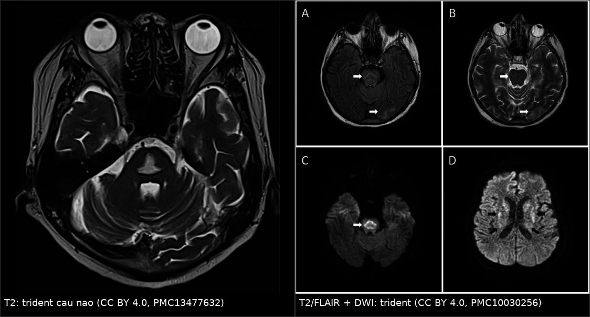
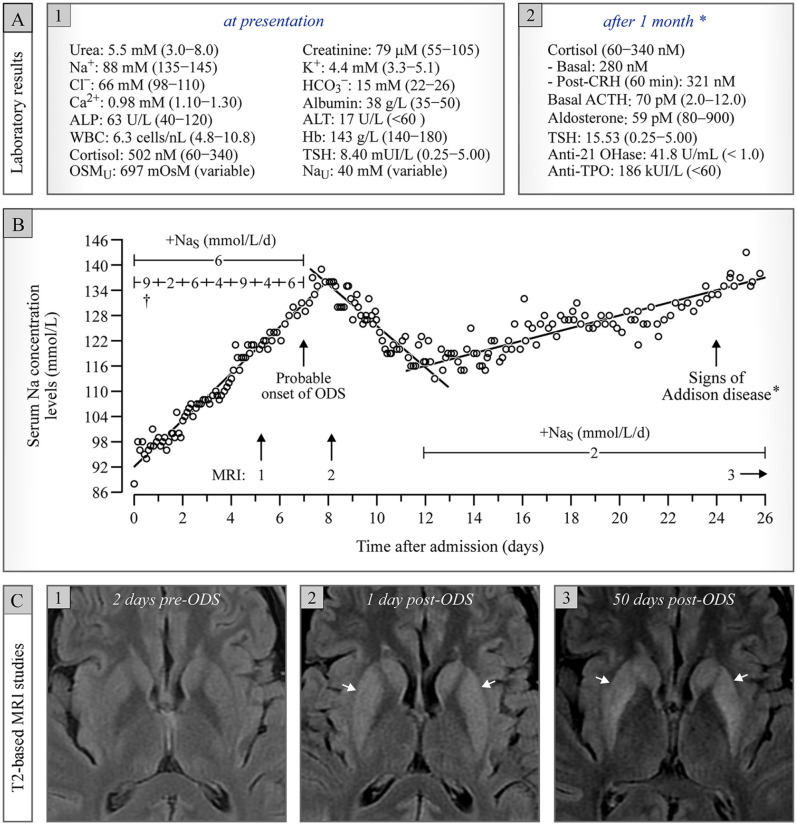
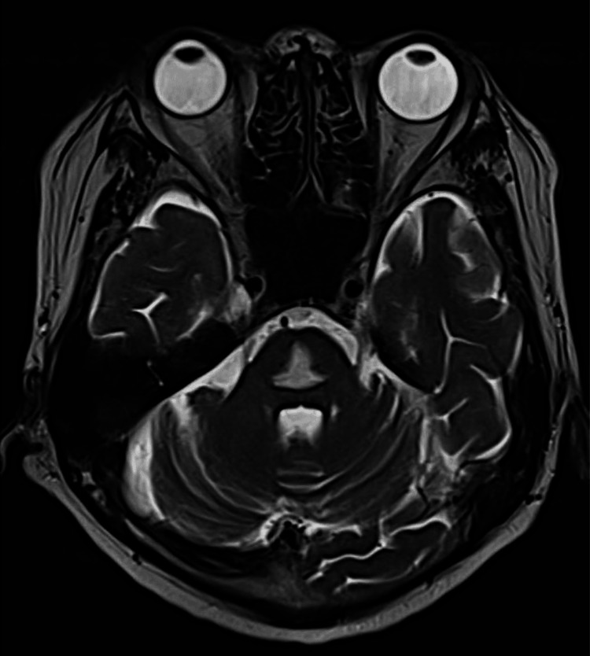
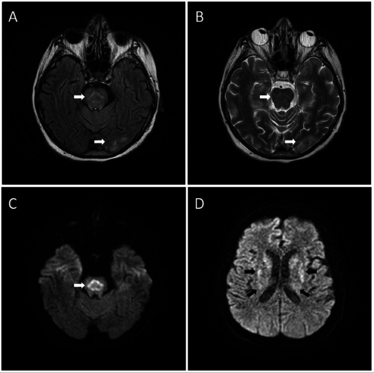
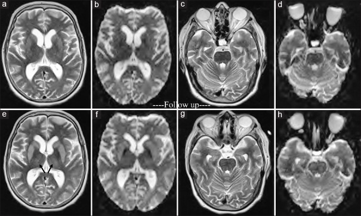

1866 — Hội chứng hủy myelin thẩm thấu (ODS) trên MRI sau sửa natri nhanh / Osmotic demyelination syndrome
Tags: pattern:huy-myelin pattern:trident pattern:han-che-khuech-tan vung:nao vung:than-neu vung:cau-nao protocol:MRI protocol:DWI protocol:ADC
Mức chắc chắn (certainty): tổng hợp y văn (literature synthesis) — số liệu lấy từ phân tích gộp 11 đoàn hệ / 26.710 bệnh nhân (PMC11833618), tổng quan hệ thống (PMC10962407), khuyến cáo điều trị 2025 (PMC11893709, PMC12844543), ca nguyên văn có ảnh (PMC13477632, PMC10030256, PMC6771194, PMC9669670) và bài tổng quan về plasmapheresis (PMC7798224). Câu nào là suy luận được ghi [suy luận].
Vì sao bài này quan trọng: 1722 đã đặt ngưỡng sửa natri +10 mmol/L/24 giờ (+8 nếu nguy cơ cao). Nhưng ngưỡng chỉ có nghĩa nếu biết hậu quả khi vượt: ODS là biến chứng do thầy thuốc gây ra, xảy ra ở 0,23% bệnh nhân hạ natri nằm viện, và không phải cứ sửa nhanh là chắc chắn mắc (OR 3,16) — nghĩa là vừa phải tôn trọng ngưỡng, vừa không được để bệnh nhân co giật vì sợ ODS. Hình ảnh là chốt chẩn đoán, nhưng MRI sớm có thể hoàn toàn bình thường — bỏ sót ở đúng cửa sổ điều trị.
1. Tổng quan bệnh học – cơ chế hình ảnh
- Sinh lý bệnh (pathophysiology): trong hạ natri mạn, não thích nghi bằng cách đào thải chất tan hữu cơ (osmolyte: myo-inositol, glutamine, taurine) ra khỏi tế bào trong 24–48 giờ để không bị phù. Khi natri máu tăng nhanh, dịch ngoại bào trở nên ưu trương trong khi tế bào chưa kịp tái tổng hợp osmolyte → nước rời khỏi tế bào, gây teo và stress thẩm thấu tế bào hình sao (astrocyte), rồi chết tế bào ít nhánh (oligodendrocyte) và tách lớp myelin. Tổn thương nặng nhất ở cầu não trung tâm — nơi có mật độ sợi ngang cầu dày và là vùng chuyển tiếp mạch máu.
- TẠI SAO T2/FLAIR tăng tín hiệu: hủy myelin + phù gian bào làm tăng nước tự do trong mô → thời gian T2 dài → tín hiệu sáng trên T2/FLAIR; đồng thời T1 giảm tín hiệu. Vùng bó vỏ–tủy và dải giữa thường được bảo tồn → tổn thương trung tâm có hình "trident" (đinh ba) / "piglet", không phải tổn thương lan toàn bộ cầu não.
- TẠI SAO DWI là dấu sớm nhất: phù độc tế bào làm nước chuyển vào nội bào, giảm khuếch tán → DWI tăng, ADC giảm trong 24 giờ đầu, có khi trước T2/FLAIR 1–2 tuần. Ngược lại, T2 chỉ đổi sau khi phù/tổn thương myelin đủ lớn → MRI ngày đầu có thể âm tính (ca PMC6771194: MRI lúc khởi phát "unremarkable", chụp lại 2 tuần mới thấy tổn thương hạch nền/đồi thị/cầu não).
- TẠI SAO CT kém nhạy: CT chỉ thấy giảm tỷ trọng trung tâm cầu khi tổn thương đủ lớn; ca PMC13477632 có ổ giảm tỷ trọng rõ, nhưng CT bình thường không loại trừ ODS.
- Số liệu định lượng cốt lõi:
- Tần suất ODS: 0,23% ở bệnh nhân hạ natri nằm viện (11 đoàn hệ, 26.710 bệnh nhân); 0,73% khi sửa nhanh vs 0,10% khi sửa không nhanh; OR 3,16 (95% CI 1,54–6,49; I² = 27%) (PMC11833618).
- Tốc độ sửa ở ca ODS: 66,6% ca sửa > 10 mEq/L trong 24 giờ đầu; 10,4% vẫn mắc ODS dù sửa < 10 mEq/L/ngày; natri trung vị lúc vào 105 mEq/L; hạ kali 18,8%; đa số nữ < 50 tuổi (PMC10962407).
- Ngưỡng sửa: ≤ 10 mmol/L trong 24 giờ đầu và ≤ 8 mmol/L trong 24 giờ tiếp theo (khuyến cáo châu Âu); nhóm nguy cơ cao dùng 4–6 mmol/L/ngày; khuyến cáo mới nhấn ~6–8 mmol/L/24 giờ (PMC10962407, PMC12844543).
- Tiên lượng: tử vong tới 31%; thêm 31% cần hỗ trợ suốt đời (tổng quan trong PMC7798224).
- Truyền 3% NaCl: bolus 2 mL/kg so với truyền 0,5–1 mL/kg/giờ — bolus ít phải hạ natri lại hơn (41,4% vs 57,1%; p = 0,04) (PMC11893709).
2. Mẫu hình + chẩn đoán phân biệt theo vị trí và giai đoạn (gamut)
Câu hỏi trung tâm: "tổn thương trung tâm cầu này là hủy myelin thẩm thấu, nhồi máu, hay u?" Bối cảnh natri + thời điểm xuất hiện triệu chứng quan trọng ngang với hình ảnh.
- A. Theo vị trí:
- Chỉ cầu não (central pontine myelinolysis, CPM): ổ trung tâm cầu, trident/piglet, giữ bờ; thể kinh điển.
- Ngoài cầu (extrapontine myelinolysis, EPM): hạch nền, đồi thị, tiểu não, chất trắng bán cầu; có thể đơn độc hoặc phối hợp; EPM đơn độc dễ bị bỏ sót vì không có "trident".
- Lan tỏa: tổn thương nhiều tầng + phù não → bệnh cảnh nặng, hôn mê.
- B. Theo thời gian (quyết định chọn chuỗi xung):
- < 24–48 giờ: DWI/ADC là chìa khóa; T2/FLAIR có thể còn bình thường.
- 3–14 ngày: T2/FLAIR sáng rõ, T1 tối; có thể ngấm thuốc viền khi hàng rào máu–não tổn thương.
- > 1 tháng: T1 tối/teo; tín hiệu có thể giảm dần nhưng không phải lúc nào cũng hết.
- C. Gamut tổn thương trung tâm cầu:
- Nhồi máu cầu não: khởi phát đột ngột, theo lãnh thổ mạch (thường lệch bên), DWI tăng/ADC giảm, kèm yếu tố mạch máu; không có bối cảnh sửa natri.
- U thân não (glioma cầu não): phình cầu não, xóa bờ, không hạn chế khuếch tán mạnh, tiến triển nhiều tuần, thường ở trẻ.
- MS/NMOSD: ổ bờ rõ, quanh mạch, kèm tổn thương dây thần kinh thị, tủy, quanh não thất; tái phát theo thời gian.
- Wernicke: tổn thương đồi thị giữa, quanh cống não, thể vú; bối cảnh rượu/suy dinh dưỡng; đáp ứng thiamine.
- Bệnh não gan: T1 tăng tín hiệu hạch nền (mangan), không phải T2 sáng trung tâm cầu đơn thuần.
- ADEM/viêm lan tỏa: nhiều ổ, sau nhiễm/tiêm, kèm sốt.
3. Bảng so sánh phân biệt (ma trận đối chiếu)
| Thực thể (entity) | Hình ảnh điển hình | Chốt vào (rule-in) | Chốt loại (rule-out) | Gợi ý xác nhận |
|---|---|---|---|---|
| ODS (CPM) | T2/FLAIR sáng trung tâm cầu, hình trident/piglet, T1 tối, DWI tăng/ADC giảm sớm | Bối cảnh sửa natri + tổn thương trung tâm cầu đối xứng + DWI hạn chế | Tổn thương lệch bên theo lãnh thổ + khởi phát đột ngột → nhồi máu | Na máu theo thời gian; MRI lặp lại 1–2 tuần nếu lần đầu âm |
| ODS (EPM) | T2 sáng hạch nền/đồi thị/tiểu não, có thể đối xứng; đôi khi kèm cầu não | Đối xứng hai bên + bối cảnh natri | Tổn thương một bên, bờ rõ, có tổn thương tủy/thị → MS/NMOSD | MRI toàn bộ não + tủy khi nghi MS |
| Nhồi máu cầu não | Vùng lãnh thổ mạch, bờ rõ, có thể xuất huyết; DWI tăng/ADC giảm | Đột ngột + yếu tố mạch máu + phân bố mạch | Đối xứng trung tâm + sửa natri → ODS | MRA/CTA; siêu âm tim; theo dõi |
| Glioma cầu não | Phình cầu não, xóa bờ, T2 sáng không đối xứng, không hạn chế khuếch tán rõ | Phình thân não + tiến triển nhiều tuần + trẻ em | Không phình, đối xứng, khởi phát sau natri → ODS | MRI có/không cản quang; sinh thiết chỉ khi cần |
| MS/NMOSD | Ổ bờ rõ, quanh não thất, dây thị/tủy, ngấm thuốc từng đợt | Tổn thương đa ổ theo thời gian + tủy/thị | Một ổ trung tâm cầu đơn độc, không ổ khác → ODS | MRI sọ + tủy; IgG oligoclonal, NMO-IgG |
| Wernicke | Đồi thị giữa, quanh cống, thể vú tăng T2/FLAIR | Rượu/suy dinh dưỡng + tam chứng + đáp ứng thiamine | Không tổn thương thể vú, có sửa natri → ODS | Thiamine thử; MRI lặp lại |
| Bệnh não gan | T1 tăng hạch nền đối xứng, T2 thường bình thường | Xơ gan + amoniac cao + T1 tăng hạch nền | T2 sáng trung tâm cầu là tổn thương thực thể → ODS | Ammoniac, MRI; điều trị gan |

Trái: T2 cầu não — ổ tăng tín hiệu trung tâm hình trident, bờ cầu não và bó vỏ–tủy được bảo tồn. Phải: T2/FLAIR + DWI cùng tổn thương, DWI tăng tín hiệu mạnh — dấu sớm nhất, có trước T2. Nguồn: Itagaki 2026 (PMC13477632) và Ivanova 2023 (PMC10030256), đều CC BY 4.0; ảnh ghép letterbox, không crop.Dấu hiệu chốt trên từng phương thức
- DWI/ADC: hạn chế khuếch tán thật (DWI sáng + ADC tối) ở trung tâm cầu, xuất hiện trong 24 giờ, có thể là bất thường duy nhất lúc đầu.
- T2/FLAIR: ổ sáng đối xứng, trung tâm, hình trident/piglet; không phù lan tỏa kiểu u.
- T1 ± cản quang: T1 tối; ngấm thuốc viền xuất hiện 1–2 tuần sau khởi phát [suy luận từ cơ chế hàng rào máu–não; ca PMC11772055 mô tả ngấm thuốc viền ngoại biên].
- CT: giảm tỷ trọng trung tâm cầu — chỉ dùng để loại trừ chảy máu, không đủ để chẩn đoán.
4. Protocol xử trí + theo dõi điện giải và hình ảnh
- Trước khi sửa natri — phân tầng nguy cơ ODS: natri < 120 mmol/L kéo dài, nghiện rượu, suy dinh dưỡng, bệnh gan, hạ kali, nữ < 50 tuổi, dùng thuốc lợi tiểu. Nhóm này đặt mục tiêu 4–6 mmol/L/24 giờ thay vì 10.
- Khi có triệu chứng thần kinh nặng (co giật, hôn mê, nôn): ưu tiên tăng natri nhanh bằng 3% NaCl bolus 2 mL/kg (hoặc 150 mL/20 phút theo phác đồ), mục tiêu +4–6 mmol/L để cắt cơn; không để bệnh nhân co giật vì sợ ODS.
- Giới hạn sửa: ≤ 10 mmol/L/24 giờ đầu, ≤ 8 mmol/L/24 giờ tiếp theo; đo natri mỗi 2–4 giờ trong giai đoạn sửa, theo dõi nước tiểu (vì đa niệu do ADH bị ức chế có thể làm natri vọt nhanh ngoài dự kiến).
- Nếu đã sửa quá nhanh: hạ natri lại bằng D5W ± desmopressin (DDAVP) ở bệnh nhân chọn lọc, theo dõi natri sát; mục tiêu đưa về ngưỡng an toàn, không hạ sốc.
- Chẩn đoán hình ảnh: MRI sọ có DWI/ADC + T2/FLAIR + T1 ± cản quang khi có triệu chứng thần kinh sau sửa natri. Nếu MRI lần đầu bình thường mà nghi ngờ cao → chụp lại sau 7–14 ngày (ca PMC6771194 chỉ dương ở lần chụp lại). CT chỉ để loại trừ chảy máu.
- Điều trị ODS đã hình thành: chủ yếu hỗ trợ (đường thở, dinh dưỡng, phục hồi chức năng), kiểm soát natri chậm và ổn định, tránh dao động thêm. Corticoid/IVIG/plasmapheresis: bằng chứng yếu, chủ yếu ca lẻ; plasmapheresis có báo cáo hồi phục hoàn toàn ở ca muộn (PMC7798224) nhưng không có thử nghiệm đối chứng.
- Tiên lượng và tư vấn: tử vong tới 31%, 31% cần hỗ trợ suốt đời; hồi phục thường nhiều tuần–nhiều tháng và không đồng nhất; hội chứng khóa trong (locked-in) có thể xảy ra.
flowchart TD
A[Hạ natri: xác định mạn hay cấp, có triệu chứng nặng?] --> B{Triệu chứng nặng: co giật, hôn mê?}
B -->|Có| C[3% NaCl bolus 2 mL/kg, mục tiêu +4-6 mmol/L]
B -->|Không| D[Điều trị nguyên nhân, theo dõi Na mỗi 4-6 giờ]
C --> E[Kiểm tra Na mỗi 2-4 giờ]
D --> E
E --> F{Vượt 10 mmol/L/24 giờ hoặc 8 mmol/L/24 giờ tiếp?}
F -->|Có| G[Hạ natri lại: D5W ± DDAVP, theo dõi sát]
F -->|Không| H[Tiếp tục dịch, kiểm tra thần kinh]
G --> H
H --> I{Triệu chứng thần kinh mới sau 2-7 ngày?}
I -->|Có| J[MRI sọ: DWI/ADC + T2/FLAIR]
I -->|Không| K[Tầm soát nguy cơ, xuất viện có hẹn]
J --> L{MRI dương tính trung tâm cầu?}
L -->|Có| M[ODS: hỗ trợ, phục hồi chức năng, tránh dao động Na]
L -->|Không nhưng nghi cao| N[Chụp lại MRI sau 7-14 ngày]
N --> L
5. Biến thể bình thường và cạm bẫy
- MRI sớm âm tính không loại trừ ODS: ca PMC6771194 có MRI lúc khởi phát không đóng góp, chỉ chụp lại 2 tuần mới thấy tổn thương; vì vậy DWI âm ngày đầu cũng không cho phép kết luận.
- CT bình thường là chuyện thường: đừng dừng lại ở CT; MRI + DWI mới là chuẩn.
- "Sửa trong giới hạn 10 mmol/L/24 giờ" vẫn có thể gây ODS: 10,4% ca ODS sửa < 10 mEq/L/ngày (PMC10962407); ca Na 125 → 134 mmol/L trong 5 ngày vẫn mắc ODS ở người nghiện rượu/hạ kali (PMC12529225) — yếu tố nguy cơ quan trọng ngang tốc độ.
- Ngược lại, không phải cứ sửa nhanh là ODS: OR chỉ 3,16, và một số ca ODS xảy ra không có sửa nhanh (PMC11833618). Vì vậy không trì hoãn điều trị ở bệnh nhân có triệu chứng nặng.
- Triệu chứng bị quy sai: chậm nói, yếu chi, rối loạn nuốt xuất hiện 2–7 ngày sau nhập viện dễ bị gán cho cai rượu, an thần, nhiễm trùng, đột quỵ — luôn hỏi đường cong natri và chỉ định MRI.
- Tổn thương ngoài cầu dễ bị bỏ qua: ảnh dưới đây cho thấy hạch nền/đồi thị cũng tăng tín hiệu trên T2 khi chụp chuỗi — chỉ đọc cầu não là thiếu.

Hình đầy đủ gồm (A) bảng xét nghiệm lúc vào và sau 1 tháng, (B) đường cong natri theo ngày với mốc "probable onset of ODS" và các lần MRI, (C) 3 lát T2: 2 ngày trước ODS (1), 1 ngày sau ODS (2) và 50 ngày sau ODS (3) — tổn thương hạch nền/đồi thị tăng tín hiệu hai bên (mũi tên trắng). Điểm cần đọc: triệu chứng xuất hiện vài ngày sau khi bắt đầu sửa natri, không tức thì — đúng kiểu trễ 2–7 ngày của ODS. Nguồn: Quigley 2022 (PMC9669670), CC BY 4.0; ảnh nguyên bản, không crop.- "Trident" không phải độc quyền của ODS: nhồi máu cầu não cũ và một số bệnh hủy myelin khác có thể giống; bối cảnh natri + đối xứng + DWI mới là chốt.
- Hạ natri lại quá tay: mục tiêu là đưa về ngưỡng an toàn, không phải gây hạ natri nặng trở lại — hạ natri lại gây phù não; thực hiện ở nơi theo dõi được natri mỗi 2 giờ [suy luận từ nguyên lý điều trị].
6. Tự lượng giá — Blind Quiz ngay trên trang tĩnh
Ca 1 — Nam 51 tuổi, nghiện rượu, nôn 6 ngày, sau đó chậm nói và yếu tứ chi

- Gợi ý lâm sàng: natri vào viện thấp, hạ kali; 3 ngày sau xuất hiện rối loạn nuốt, nói khó, yếu tứ chi; CT sọ không chảy máu.
- Câu hỏi: Mô tả tổn thương? Vì sao bó vỏ–tủy được bảo tồn? Chẩn đoán và yếu tố nguy cơ?
Bấm để hiện đáp án (findings + chẩn đoán)
- Dấu hiệu: ổ tăng tín hiệu đối xứng trung tâm cầu trên T2, hình trident, bờ cầu não và bó vỏ–tủy còn tối; CT trước đó có giảm tỷ trọng trung tâm cầu (Fig. 1 của bài).
- Chẩn đoán: ODS thể trung tâm cầu (CPM) — vì tổn thương đối xứng, trung tâm, sau đợt hạ natri ở người nghiện rượu + hạ kali (hai yếu tố nguy cơ mạnh).
- Vì sao bảo tồn bó vỏ–tủy: sợi ngang cầu và vùng chuyển tiếp mạch máu nhạy với stress thẩm thấu hơn bó vỏ–tủy đặc; vì vậy tổn thương trung tâm tạo hình "đinh ba" thay vì liệt mềm toàn bộ.
- Nguồn ảnh: Itagaki H, Endo T. Cureus 2026 (PMC13477632), CC BY 4.0.
Ca 2 — Bệnh nhân sau COVID-19, rối loạn ý thức và liệt tứ chi sau sửa natri; MRI ngày 7

- Gợi ý lâm sàng: hạ natri trong đợt COVID-19; vài ngày sau xuất hiện rối loạn ý thức và liệt tứ chi.
- Câu hỏi: Chuỗi xung nào dương sớm nhất? Tại sao DWI quan trọng hơn T2 ở ngày đầu?
Bấm để hiện đáp án (findings + chẩn đoán)
- Dấu hiệu: (A) T2 và (B) T2/FLAIR: tăng tín hiệu trung tâm cầu; (C, D) DWI: ổ tăng tín hiệu mạnh cùng vị trí, hình trident/piglet.
- DWI dương sớm nhất: phù độc tế bào làm giảm khuếch tán trong 24 giờ, khi T2/FLAIR còn có thể bình thường; vì vậy luôn kèm DWI/ADC trong protocol.
- Chẩn đoán: ODS sau sửa natri; điều trị hỗ trợ + phục hồi chức năng, tránh dao động natri tiếp.
- Nguồn ảnh: Ivanova NI et al., Cureus 2023 (PMC10030256), CC BY 4.0.
Ca 3 — Bệnh nhân có triệu chứng nhưng MRI đầu tiên "bình thường"

- Gợi ý lâm sàng: rối loạn ý thức và vận động sau đợt hạ natri; MRI lúc khởi phát được báo "không đóng góp"; nghi ngờ ODS vẫn cao.
- Câu hỏi: Hàng trên và hàng dưới khác nhau ở đâu? Nếu MRI ngày 1 âm tính thì làm gì?
Bấm để hiện đáp án (findings + chẩn đoán)
- Dấu hiệu: hàng trên (a–d) T2/DWI lúc khởi phát gần như bình thường; hàng dưới (e–h) sau 2 tuần có tăng tín hiệu nhẹ ở hạch nền, đồi thị và cầu não, kèm hạn chế khuếch tán.
- Chẩn đoán: ODS giai đoạn sớm với MRI đầu âm tính — không loại trừ; chụp lại sau 7–14 ngày là bắt buộc khi nghi ngờ.
- Bài học: DWI có thể dương trước T2, nhưng nếu cả hai còn âm trong 48 giờ đầu thì theo dõi lâm sàng + chụp lại, không bỏ chẩn đoán.
- Nguồn ảnh: Seniaray N et al., Indian J Nucl Med 2019 (PMC6771194), CC BY-NC-SA 4.0; ảnh nguyên bản, không crop.
Phản biện nguồn: ca 3 là ca được chẩn đoán ODS trên lâm sàng với MRI không đóng góp, sau đó xác nhận bằng FDG PET/CT (bài gốc). Trong thực hành, PET không phải chuẩn — dùng MRI lặp lại; trích ca này để minh họa giới hạn của MRI sớm, không để đề xuất PET thường quy.
Bài liên quan chéo
- 200 – Tổng quan hệ Thần kinh
- 1722 – Hạ natri muộn sau mổ tuyến yên: ngưỡng sửa natri
- 1710 – Đái tháo nhạt trung ương sau mổ tuyến yên
- 210 – Giải phẫu sọ não trên cắt lớp
- 211 – Đột quỵ não: phân biệt nhồi máu cầu não
Ảnh
- Tên file:
1866_slug_Modality_SourceID.jpg; nguồn + giấy phép từng ảnh ởimages/CREDITS.md. - Ảnh composite
composite_t2-vs-dwi.jpgtạo bằngtools/make_composite.py(letterbox, không crop/kéo giãn) từ 2 ảnh CC BY 4.0.
Không dùng để chẩn đoán độc lập khi chưa có người hướng dẫn.